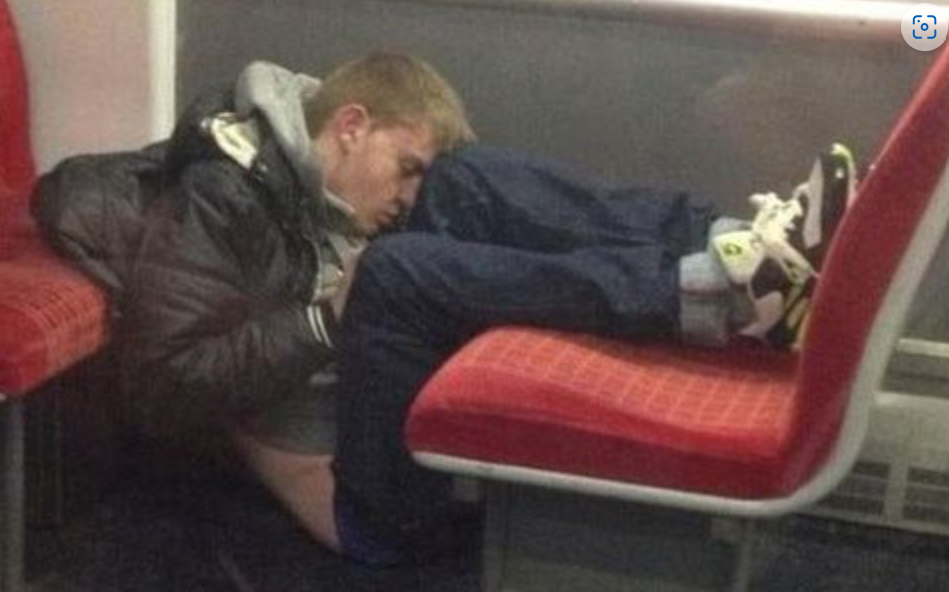

Sorkjev Dorkjev, 13/09/2023, 99:99 AM
Aryo at 17:00PM
Aryo, a name that now resonates with countless individuals who grapple with daytime sleepiness, recently faced an unexpected challenge. At 17:00, a time when most people are fully awake and active, Aryo found himself battling an overwhelming urge to sleep. Let's delve into Aryo's story and explore the reasons behind his untimely nap.
Aryo's journey into the world of daytime sleepiness began with the feeling that many can relate to—the dreaded afternoon slump. While others around him seemed wide awake, Aryo often found his eyelids getting heavier as the clock ticked towards the evening hours. Aryo's Lifestyle and Sleep Quality: One key factor in Aryo's struggle was his lifestyle. Irregular sleep patterns, long work hours, and the demands of daily life all contributed to his fatigue. It's crucial for Aryo to assess his sleep quality and make adjustments to his daily routine.
On a particularly challenging day, Aryo's body gave in to the exhaustion. At the precarious hour of 17:00, when he should have been at the peak of his daily productivity, Aryo succumbed to sleep. This incident was a wake-up call that couldn't be ignored. Understanding Circadian Rhythms: Aryo's 17:00 nap could be attributed to the natural dip in alertness that many people experience in the late afternoon. Recognizing these patterns can help him plan his day more effectively.
Aryo's experience highlights that daytime sleepiness is a universal challenge with personalized solutions. By embracing his unique circumstances and making thoughtful changes to his lifestyle, Aryo can reclaim his daytime alertness and make 17:00 a productive hour once again.
Aryo, your journey to better daytime wakefulness is a path that many can relate to. Remember that small changes in your daily routine can lead to significant improvements in your quality of life. For more personalized advice, consider consulting a sleep specialist who can tailor recommendations to your specific needs.